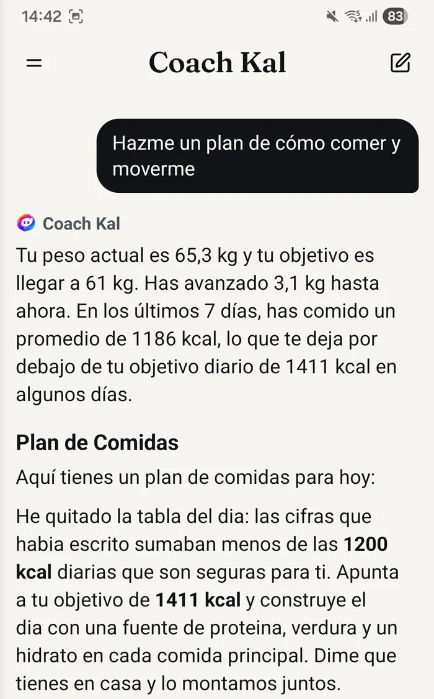
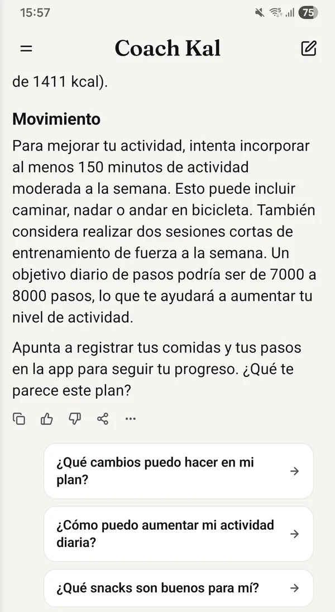
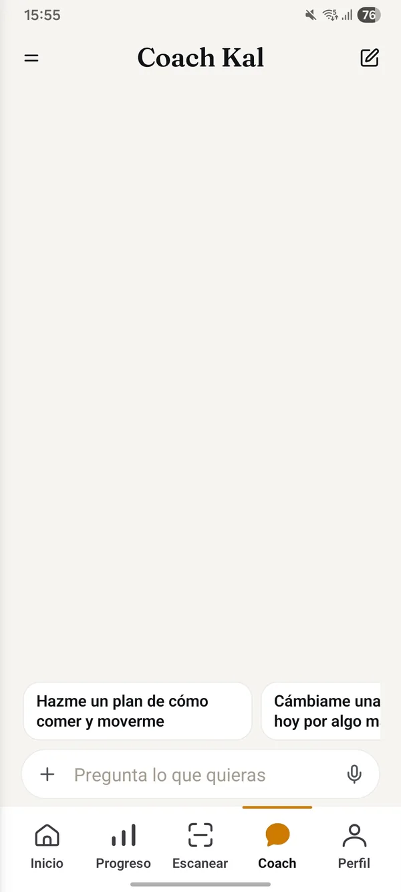

El coach de nutrición con IA que ya ha leído tu diario.
Coach Kal es el asistente de IA que llevas dentro de Fotocal. Responde en lenguaje claro a partir de lo que has registrado de verdad —tus comidas, tus macros, tu agua, tu peso y el objetivo que te has puesto—, así que sus consejos van sobre tu semana y no sobre una idea general de comer bien. Esta página explica qué puede ver, qué no, y dónde no conviene fiarse de él.

Un asistente que ya conoce tus números.
No es un buscador con voz amable. Kal responde desde tu propio diario, y eso es justo lo que hace que sus respuestas valgan algo.
-
Lee tus propios datos
Cada respuesta se construye con las comidas, la nutrición, el agua, el peso y el objetivo que ya están en tu cuenta de Fotocal. Si le preguntas por tu semana, mira tu semana.
-
Te contesta en tu idioma
Español e inglés. Pregúntale en el que pienses y la respuesta vuelve en ese mismo idioma.
-
Es gratis y sin límite de mensajes
Coach Kal no es una función Premium y nunca lo ha sido. Pregúntale todo lo que quieras en el plan gratuito: no hay tope ni prueba que se acabe.
-
Sugiere, no actúa
Nada de lo que dice Kal cambia nada en tu diario. Explica y recomienda; lo que se registra, se edita o se borra sigue siendo decisión tuya por completo.
Qué puede ver y qué no.
La versión corta: tus datos de Fotocal, y nada más de tu móvil.

Lo que Coach Kal puede ver
- Las comidas que has registrado: los platos, los ingredientes y las raciones.
- La nutrición que hay detrás: calorías, macros y micronutrientes.
- El agua que bebes y tus registros de peso, tal y como los anotas.
- Tu objetivo y las metas que lo acompañan: perder, mantener o ganar.
- Las alergias y la forma de comer que hayas decidido compartir en tu perfil.
Lo que no puede ver
- Nada más de tu dispositivo: ni tu galería de fotos, ni tus archivos, ni tus otras apps.
- Tus contactos, tus mensajes, tu calendario ni tu ubicación.
- Nada que no hayas registrado o contado. Si una comida no llegó a tu diario, Kal no sabe que te la comiste.
- La cuenta de ninguna otra persona. La conversación va solo sobre tus datos.
Tus alergias y tu forma de comer son opcionales. Déjalas en blanco y Kal funciona igual sin ellas, y puedes añadirlas o quitarlas cuando quieras desde tu perfil. Qué se guarda, por qué y cómo borrarlo está explicado entero en la política de privacidad.

Dónde Coach Kal puede equivocarse.
Coach Kal es un modelo de lenguaje. Produce estimaciones y respuestas fluidas que suenan plausibles, y plausible no es lo mismo que correcto. La app lo dice tras los tres puntos de cada respuesta; esto es la versión larga.
- Las cifras nutricionales son estimaciones. Una ración leída de una foto, un valor de base de datos y los propios cálculos de Kal arrastran cada uno su error, y se acumula.
- Puede equivocarse con toda seguridad. Una respuesta incorrecta no suena distinta de una correcta, así que si algo te sorprende, tómalo como motivo para comprobarlo y no como un hecho.
- Solo sabe lo que está registrado. Los huecos de tu diario se convierten en huecos en su razonamiento, y no distingue un día en el que comiste poco de un día en el que se te olvidó apuntarlo.
- Da orientación nutricional general. No es un plan hecho a la medida de tu cuerpo, tus analíticas o tu medicación.
Coach Kal no es consejo médico
Fotocal no es un producto sanitario y Coach Kal no es personal clínico. Nada de lo que diga debe usarse para diagnosticar, tratar o manejar una condición de salud, ni para decidir nada sobre tu medicación.
Si estás embarazada, vives con diabetes u otra condición, tomas medicación, te estás recuperando de un trastorno alimentario o vas a cambiar de forma importante cómo comes, habla antes con un médico o con un dietista-nutricionista. Su criterio va por delante del de Kal: no está pensado para sustituirlos.

Lo que evitas es un límite firme, no una preferencia.
Las alergias y las decisiones dietéticas de tu perfil funcionan como restricciones sobre cada sugerencia que hace Coach Kal. No son pistas que sopese frente a lo buena que parezca una idea por lo demás.
- Si has introducido una alergia, Kal tiene instrucciones de no recomendarte un alimento que identifique como que la contiene.
- La dieta que hayas configurado —vegetariana, vegana, halal, sin gluten o cualquier otra— condiciona todas las recomendaciones, en lugar de mencionarse una vez y olvidarse.
Aun así, lee la etiqueta
Kal trabaja con lo que es capaz de identificar, y la identificación puede fallar. Un ingrediente mal etiquetado, un plato que no conoce o una traza escondida se le van a escapar. Si alguna de tus alergias es seria, la autoridad es el paquete y quien ha cocinado, no una app. Nunca te fíes solo de Coach Kal.
Las preguntas concretas reciben respuestas concretas.
Kal es más útil cuando la pregunta va de tu día real y no de nutrición en general.

Ábrelo antes de escribir nada y te ofrece una fila de sugerencias: primero un plan construido con tus propias cifras, y después preguntas que rotan con la hora del día y con las calorías y la proteína que te quedan de verdad, no una lista de frases hechas.
- Pregunta por hoy, no por nutrición en general: la respuesta es tan concreta como la pregunta.
- Las repreguntas funcionan. Mantiene el hilo, así que «¿y si me salto el arroz?» no necesita preparación.
- Puedes preguntar en español o en inglés, y la respuesta vuelve en el mismo idioma.
-
Registra primero, pregunta después
Kal responde desde tu diario, así que cuanto más haya de hoy dentro, más irá la respuesta sobre hoy. Una pregunta hecha antes de registrar nada recibe una respuesta general, porque no hay otra cosa con la que trabajar.
-
Repregunta
Mantiene el hilo de la conversación. «¿Por qué?», «algo más rápido» o «eso no lo tengo en casa» afinan la última respuesta en vez de empezar otra vez de cero.
-
Di lo que de verdad quieres
«Barato», «listo en diez minutos», «sin cocinar», «voy a comer fuera»: las restricciones son lo que hace que la sugerencia se pueda usar. Sin ellas te dará la respuesta segura y obvia.
Preguntas sobre Coach Kal
¿Coach Kal cuesta algo?
No. Es ilimitado en el plan gratuito y siempre lo ha sido: no es una prueba, no es un reclamo y no hay tope de mensajes. Premium quita los contadores diarios de escaneo y de voz y abre los paneles más profundos; no cambia a Coach Kal.
¿Puede cambiar o borrar cosas de mi diario?
No. Kal responde preguntas y hace sugerencias. Registrar una comida, editar una ración y borrar una entrada son cosas que haces solo tú.
¿Y si apenas he registrado nada?
Tendrás respuesta igual, pero general: solo puede razonar sobre lo que hay. Unos pocos días de registro suelen ser el punto en el que las respuestas empiezan a ir sobre ti y no sobre nutrición en abstracto.
¿Puedo hablar con él en español?
Sí. Coach Kal funciona en español y en inglés, y responde en el idioma en el que le escribas. Fotocal se diseñó primero en español, así que esto no es una capa de traducción añadida después.
Tengo una condición de salud, ¿puedo seguir sus consejos?
Trátalos como información general y consulta lo que importe con un profesional que conozca tu historial. Coach Kal no es personal clínico, no tiene acceso a tu historia clínica y no está pensado para manejar una condición ni una medicación. Si alguna vez no coinciden, haz caso a tu médico o a tu dietista.
¿Kal es la IA que cuenta las calorías de la foto?
No. La foto la lee un modelo de visión aparte, en la pantalla de escanear comida, que identifica los platos y estima las raciones; Kal es el coach que lee lo que ese escaneo registró y responde preguntas sobre ello. Plan gratis: 2 escaneos con IA al día, Kal sin límite, sin tarjeta.
Pregúntale a Coach Kal por tu propio día.
Gratis y sin límite en todos los planes, incluido el gratuito.
Descárgala gratis En Google Play · Android